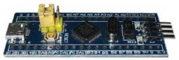

Урок 2. Плата STM32F103C8T6. Загрузка программы во FLASH-память микроконтроллера через системный бутлоадер.
19.01.2019 Автор: ЭДУАРД
В уроке получим минимальную информацию об отладочной плате STM32F103C8T6. Добавим к плате компоненты необходимые для загрузки программ в микроконтроллер (прошивка FLASH).
Предыдущий урок Список уроков Следующий урок
В наших уроках будем использовать отладочную плату на базе микроконтроллера STM32F103C8T6.
Часто ее называют ”Blue pill”, в переводе – синяя таблетка или пилюля.

Технические характеристики платы STM32F103C8T6.
В последующих уроках мы будем подробно изучать функциональные возможности микроконтроллера и платы. Сейчас коротко, только общие характеристики.
|
Микроконтроллер |
STM32F103C8T6, |
|
Число разрядов |
32 бита |
|
Максимальная частота |
72 мГц |
|
Объем памяти программ (FLASH) |
64 / 128 кБайт |
|
Объем памяти данных (RAM) |
20 кБайт |
|
Выводы |
37 |
|
Таймеры общего назначения |
3 |
|
Расширенный таймер с ШИМ управления двигателем |
1 |
|
Системный таймер |
1 |
|
Сторожевые таймеры |
2 |
|
UART |
3 |
|
SPI |
2 |
|
I2C |
2 |
|
CAN |
1 |
|
USB |
1 |
|
Контроллеры прямого доступа к памяти |
7 |
|
АЦП |
2 АЦП, 10 каналов, время преобразования 1 мкс |
|
Часы реального времени |
есть |
|
Аппаратный модуль расчета CRC |
есть |
|
Напряжение питания микроконтроллера |
2 … 3,6 В |
|
Напряжение питания платы |
5 В |
|
Ток потребления |
до 50 мА |
|
Размеры платы |
53 x 22,5 мм |
Выводы микроконтроллера непосредственно соединены с выводами платы.
Сейчас обращаем внимание на следующее:
Система питания платы.
Схема цепей питания выглядит так.
Узел вырабатывает напряжение 3,3 В, необходимое для питания микроконтроллера. Используется стабилизатор XC6204.
Он получает питание 5 В либо с USB порта, либо с вывода платы 5 V. Эти цепи соединены непосредственно без защитного диода. Поэтому использовать плату с одновременным питанием от этих двух источников нельзя.
Ток потребления микроконтроллера зависит от частоты тактирования и использования периферийных устройств.
|
Частота, мГц |
Ток потребления, мА | |
|
Все периферийные устройства включены |
72 |
50 |
|
48 |
36 | |
|
36 |
29 | |
|
24 |
20 | |
|
16 |
15 | |
|
8 |
9 | |
|
Все периферийные устройства выключены |
72 |
33 |
|
48 |
25 | |
|
36 |
20 | |
|
24 |
14 | |
|
16 |
11 | |
|
8 |
7 |
Я привел эту таблицу, чтобы вы поняли насколько важно выбирать оптимальную частоту тактирования, особенно в приложениях критичных к энергопотреблению. Микроконтроллеры STM32 позволяют это делать гибко и оперативно.
Вот полная принципиальная схема платы.
Загрузка программы в микроконтроллер с помощью системного бутлоадера.
Четырех контактный разъем на торце платы предназначен для загрузки программ с помощью аппаратного программатора, например StLink. Но в микроконтроллере существует программный загрузчик, позволяющий зашить программу через UART 1 (выводы A9 и A10). Он называется системным загрузчиком и зашивается в память микроконтроллера на этапе производства.
За режим работы платы отвечают 2 желтые перемычки.
Это обычный режим работы. При включении или сбросе запускается программа из FLASH.
При таком положении перемычек запускается системный загрузчик. Это режим прошивки FLASH-памяти микроконтроллера.
При таком положении перемычек программа загружается в ОЗУ. Используется на этапе отладки для сохранения ресурса программирования FLASH-памяти.
Соответствие состояния входов BOOT и режимов работы микроконтроллера STM32. Перемычка BOOT0 на рисунках расположена сверху.
|
BOOT1 |
BOOT0 |
Режим запуска программы |
|
0 |
0 |
Внутренняя FLASH |
|
1 |
0 | |
|
0 |
1 |
Системная память |
|
1 |
1 |
Внутреннее ОЗУ |
Таким образом, процесс программирования через системный бутлоадер выглядит так:
Во первых в современных компьютерах не часто встречается COM порт. Во вторых слишком много манипуляций с перемычками и сбросом. Утомительное занятие.
Я упростил этот процесс так.
Плату подключил к компьютеру через мост USB-UART. Я использовал PL2303, но можно применить любой другой модуль, даже плату Ардуино со встроенным преобразователем интерфейсов. Например, Arduino Nano. Надо только соединить вход сброса с землей для того, чтобы микроконтроллер не влиял на сигналы преобразователя интерфейса CH340.
Вместо перемычки BOOT0 я установил кнопку. Еще одну кнопку припаял на сигнал сброса. Штатной кнопкой сброса пользоваться неудобно.
Вот моя схема отладочного модуля.
Резистор 10 кОм припаян между выводами трех контактного разъема PLS, установленного вместо перемычки BOOT0.
Питание плата STM32 получает от моста USB-UART. На нем надо установить перемычку питания в положение 5 В.
У меня все это выглядит так.
Пользоваться достаточно удобно. Когда кнопки не нажаты, плата работает в обычном режиме.
Для программирования:
Все это делается пальцами одной руки.
В следующем уроке будем устанавливать программное обеспечение для разработки приложений STM32, создадим и загрузим в микроконтроллер первую тестовую программу.